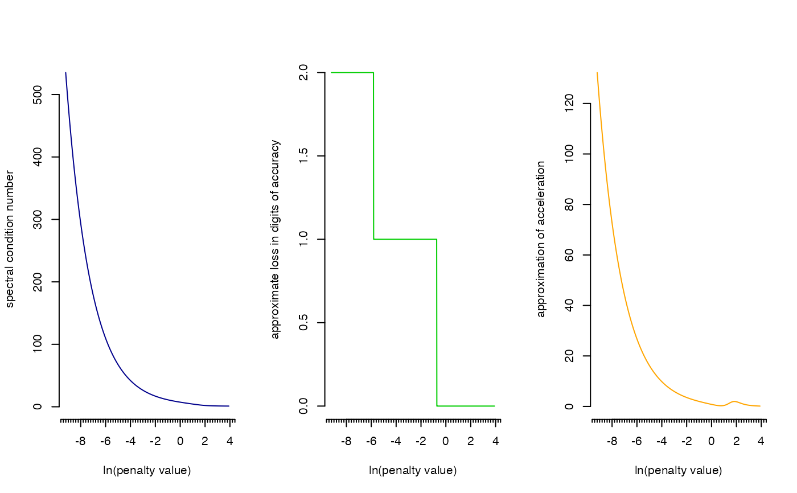

R/rags2ridges.R
CNplot.RdFunction that visualizes the spectral condition number of the regularized precision matrix against the domain of the regularization parameter. The function can be used to heuristically determine an acceptable (minimal) value for the penalty parameter.
CNplot(
S,
lambdaMin,
lambdaMax,
step,
type = "Alt",
target = default.target(S, type = "DUPV"),
norm = "2",
Iaids = FALSE,
vertical = FALSE,
value = 1e-100,
main = "",
nOutput = FALSE,
verbose = TRUE,
suppressChecks = FALSE
)Sample covariance matrix.
A numeric giving the minimum value for the penalty
parameter.
A numeric giving the maximum value for the penalty
parameter.
An integer determining the number of steps in moving
through the grid [lambdaMin, lambdaMax].
A character indicating the type of ridge estimator to be
used. Must be one of: "Alt", "ArchI", "ArchII".
A target matrix (in precision terms) for Type I ridge
estimators.
A character indicating the norm under which the condition
number is to be calculated/estimated. Must be one of: "1", "2".
A logical indicating if the basic condition number plot
should be amended with interpretational aids.
A logical indicating if output graph should come with
a vertical line at a pre-specified value for the penalty parameter.
A numeric indicating a pre-specified value for the
penalty parameter.
A character with which to specify the main title of the
output graph.
A logical indicating if numeric output should be
returned.
A logical indicating if information on progress should
be printed on screen.
A logical indicating if the input checks should
be suppressed.
The function returns a graph. If nOutput = TRUE the function
also returns an object of class list:
A numeric
vector representing all values of the penalty parameter for which the
condition number was calculated. The values of the penalty parameter are
log-equidistant.
A numeric vector containing
the condition number for each value of the penalty parameter given in
lambdas.
Under certain target choices the proposed ridge estimators (see
ridgeP) are rotation equivariant, i.e., the eigenvectors of
\(\mathbf{S}\) are left intact. Such rotation equivariant situations help
to understand the effect of the ridge penalty on the precision estimate: The
effect can be understood in terms of shrinkage of the eigenvalues of the
unpenalized precision estimate \(\mathbf{S}^{-1}\). Maximum shrinkage
implies that all eigenvalues are forced to be equal (in the rotation
equivariant situation). The spectral condition number w.r.t. inversion
(ratio of maximum to minimum eigenvalue) of the regularized precision matrix
may function as a heuristic in determining the (minimal) value of the
penalty parameter. A matrix with a high condition number is near-singular
(the relative distance to the set of singular matrices equals the reciprocal
of the condition number; Demmel, 1987) and its inversion is numerically
unstable. Such a matrix is said to be ill-conditioned. Numerically,
ill-conditioning will mean that small changes in the penalty parameter lead
to dramatic changes in the condition number. From a numerical point of view
one can thus track the domain of the penalty parameter for which the
regularized precision matrix is ill-conditioned. When plotting the condition
number against the (domain of the) penalty parameter, there is a point of
relative stabilization (when working in the \(p > n\) situation) that can
be characterized by a leveling-off of the acceleration along the curve when
plotting the condition number against the (chosen) domain of the penalty
parameter. This suggest the following fast heuristic for determining the
(minimal) value of the penalty parameter: The value of the penalty parameter
for which the spectral condition number starts to stabilize may be termed an
acceptable (minimal) value.
The function outputs a graph of the (spectral) matrix condition number over
the domain [lambdaMin, lambdaMax]. When norm = "2" the
spectral condition number is calculated. It is determined by exact
calculation using the spectral decomposition. For most purposes this exact
calculation is fast enough, especially when considering rotation equivariant
situations (see ridgeP). For such situations the amenities for
fast eigenvalue calculation as provided by
RSpectra are used
internally. When exact computation of the spectral condition number is
deemed too costly one may approximate the computationally friendly
L1-condition number. This approximation is accessed through the
rcond function (Anderson et al. 1999).
When Iaids = TRUE the basic condition number plot is amended/enhanced
with two additional plots (over the same domain of the penalty parameter as
the basic plot): The approximate loss in digits of accuracy (for the
operation of inversion) and an approximation to the second-order derivative
of the curvature in the basic plot. These interpretational aids can enhance
interpretation of the basic condition number plot and may support choosing a
value for the penalty parameter (see Peeters, van de Wiel, & van Wieringen,
2016). When vertical = TRUE a vertical line is added at the constant
value. This option can be used to assess if the optimal penalty
obtained by, e.g., the routines optPenalty.LOOCV or
optPenalty.aLOOCV, has led to a precision estimate that is
well-conditioned.
The condition number of a (regularized) covariance matrix is
equivalent to the condition number of its corresponding inverse, the
(regularized) precision matrix. Please note that the target argument
(for Type I ridge estimators) is assumed to be specified in precision terms.
In case one is interested in the condition number of a Type I estimator
under a covariance target, say \(\mathbf{\Gamma}\), then just specify
target = solve(\(\mathbf{\Gamma}\)).
Anderson, E, Bai, Z., ..., Sorenson, D. (1999). LAPACK Users' Guide (3rd ed.). Philadelphia, PA, USA: Society for Industrial and Applied Mathematics.
Demmel, J.W. (1987). On condition numbers and the distance to the nearest ill-posed problem. Numerische Mathematik, 51: 251--289.
Peeters, C.F.W., van de Wiel, M.A., & van Wieringen, W.N. (2020). The spectral condition number plot for regularization parameter evaluation. Computational Statistics, 35: 629--646.
## Obtain some (high-dimensional) data
p = 25
n = 10
set.seed(333)
X = matrix(rnorm(n*p), nrow = n, ncol = p)
colnames(X)[1:25] = letters[1:25]
Cx <- covML(X)
## Assess spectral condition number across grid of penalty parameter
CNplot(Cx, lambdaMin = .0001, lambdaMax = 50, step = 1000)
#> Perform input checks...
#> Calculating spectral condition numbers...
#> Plotting...
## Include interpretational aids
CNplot(Cx, lambdaMin = .0001, lambdaMax = 50, step = 1000, Iaids = TRUE)
#> Perform input checks...
#> Calculating spectral condition numbers...
#> Calculating interpretational aids...
#> Plotting...
